Rapport d'état du contrôleur CNC Plasma + offre de machine à bobiner (modèles V1 & V3). Tous les équipements testés, drivers configurés, câblage connecté — test de l'axe X en cours.
Machine KOTEC KTPG-320 · le mouvement est en cours de validation avant la partie Plasma (THC, ignition, console gaz).
| Composant | Détail |
|---|---|
| Machine | KOTEC KTPG-320 CNC Plasma (SOMIK SKIKDA) |
| Contrôleur | Sentrol 2 → Mach3 + UC300 (EC500) |
| Axes X/Y | Servos YE-LI YPV (YBL13S-75L.Z) |
| Axe Z | SLO-SYN + DM556 |
| Plasma | Hypertherm HPR + Proma THC |
Tous les équipements testés + rapport d'essai rédigé et remis pour vos archives.
Tous les variateurs configurés pour le contrôleur UC300 (EC500).
Câblage variateur ↔ servo driver connecté et vérifié.
En cours : test de l'axe X → termine la Partie 1 (Mouvement).
Partie 2 Plasma : THC, ignition, console gaz.
Contrôle complet de la machine et relevés — état des lieux.
Adaptation du système à nos solutions ITS.
Mise en œuvre et validation de nos solutions.
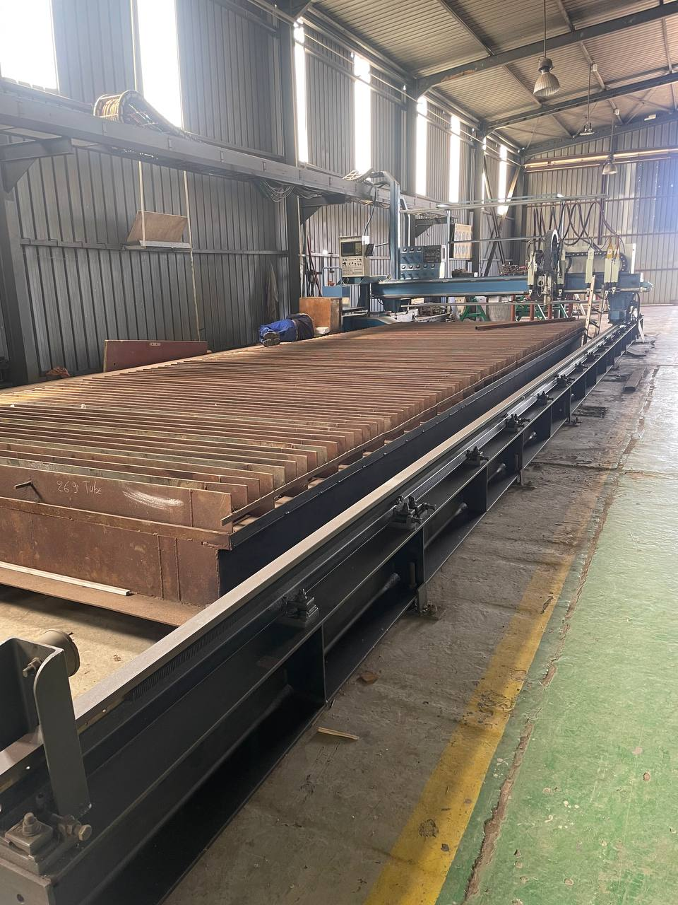
1↗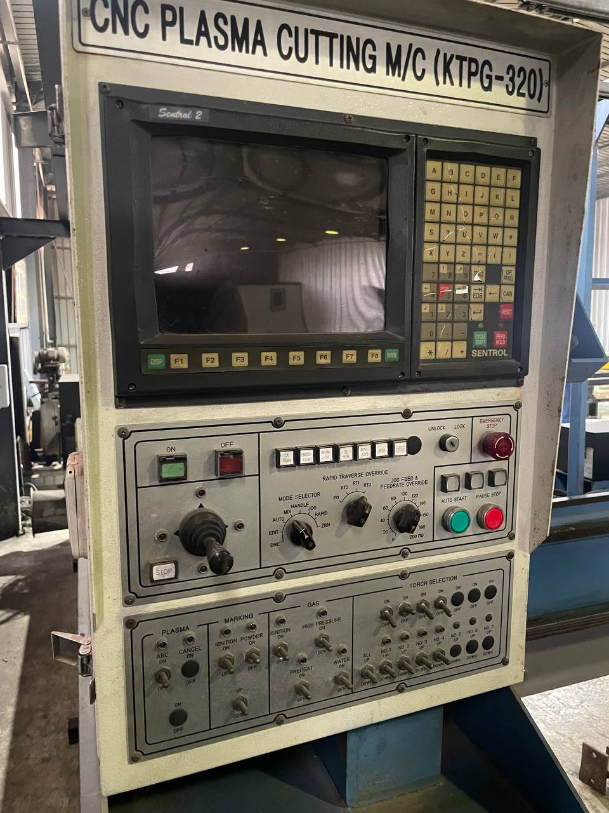
2↗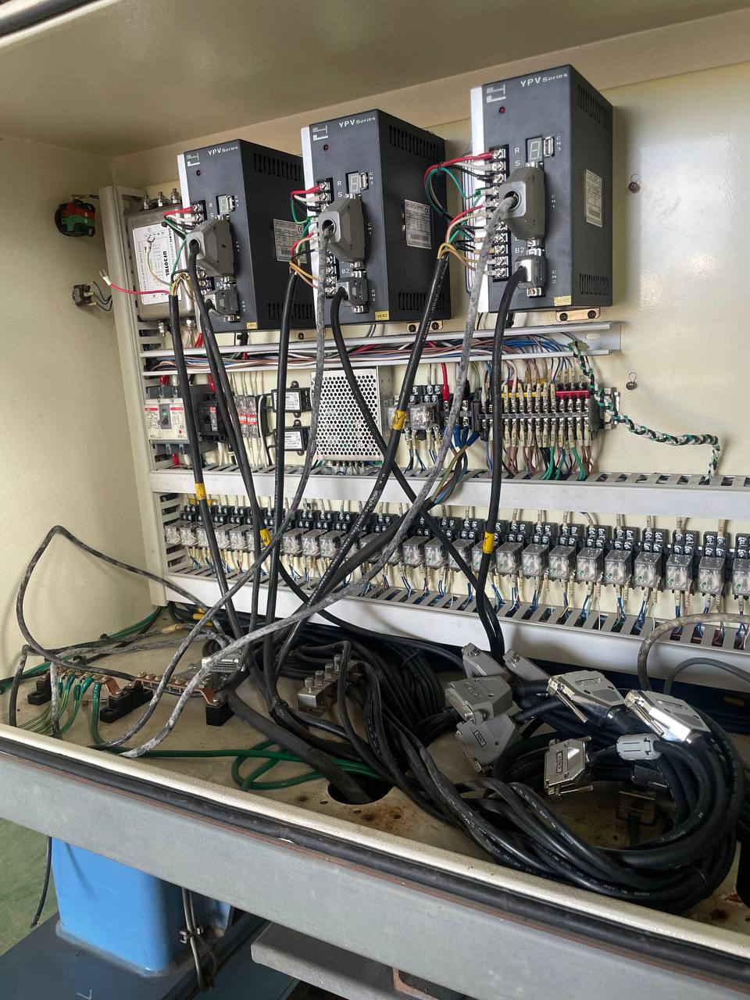
3↗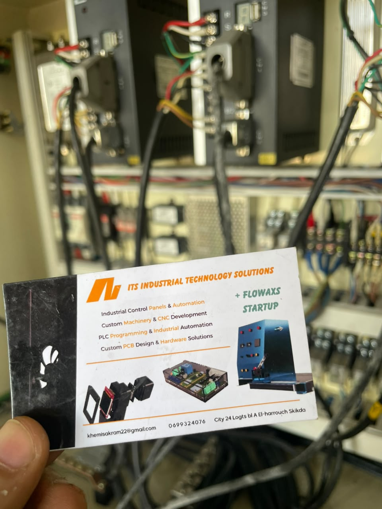
4↗Machines à bobiner moteurs & transformateurs — fabriquées en Algérie, disponibles en deux versions.
| Caractéristique | Valeur |
|---|---|
| Désignation | Machine à bobiner moteurs & transformateurs |
| Charge max | 80 kg |
| Tension | 240V monophasé |
| Vitesse | 100 tr/min |
| Origine | Fabriqué en Algérie |
Précision et répétabilité pour bobines et transformateurs.
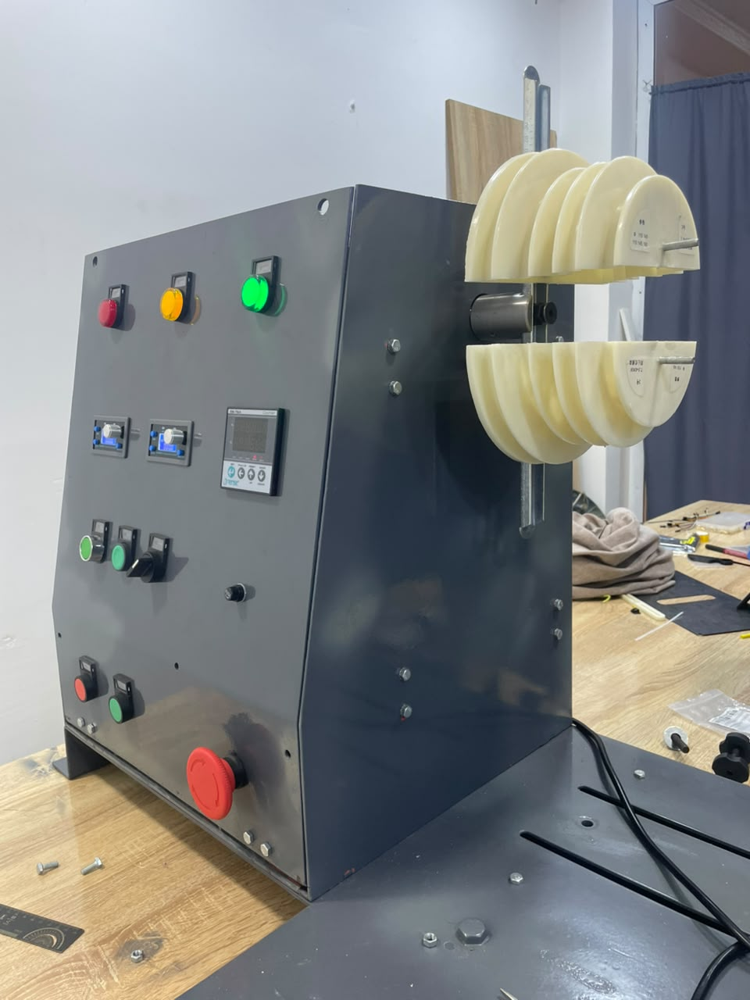
1↗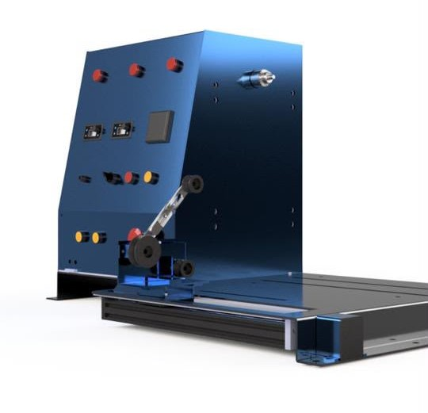
2↗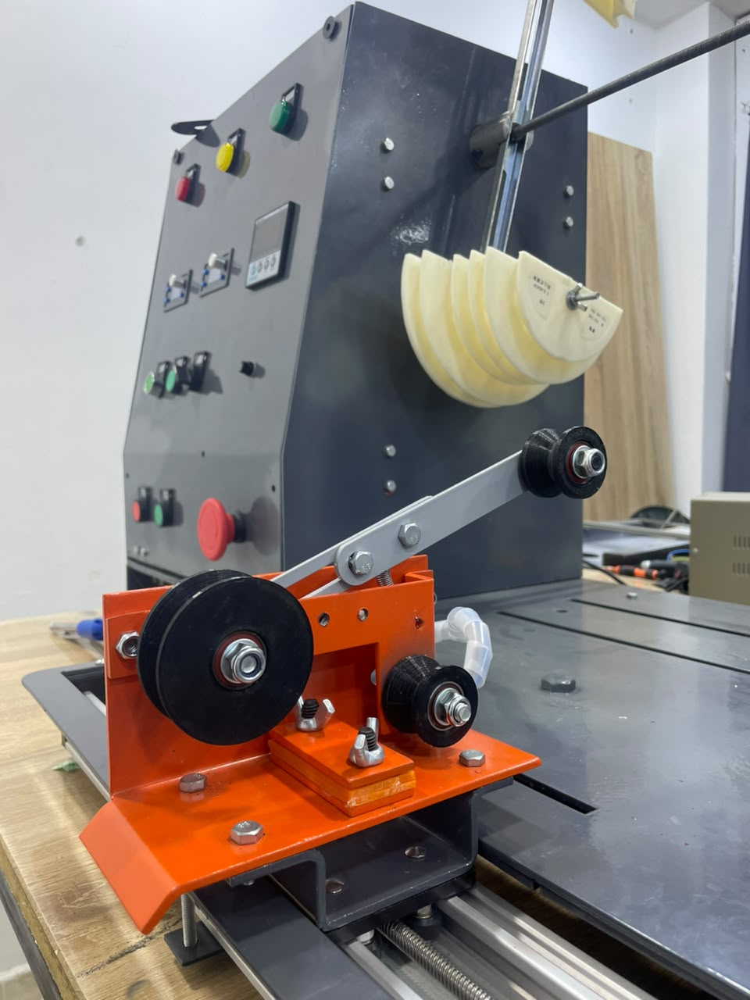
3↗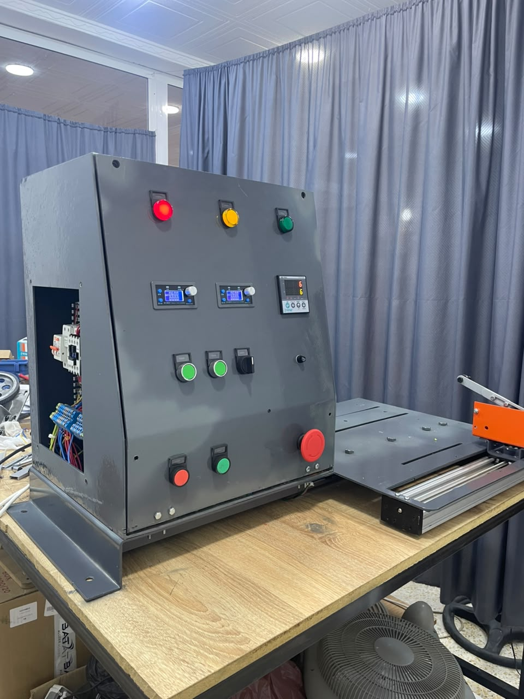
4↗Haute cadence, couple constant, double production.
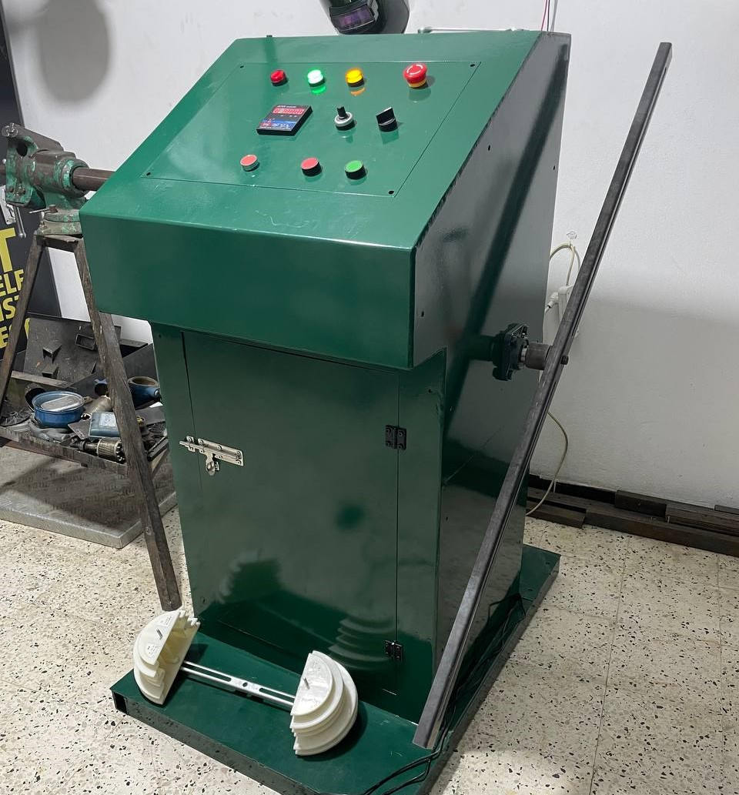
1↗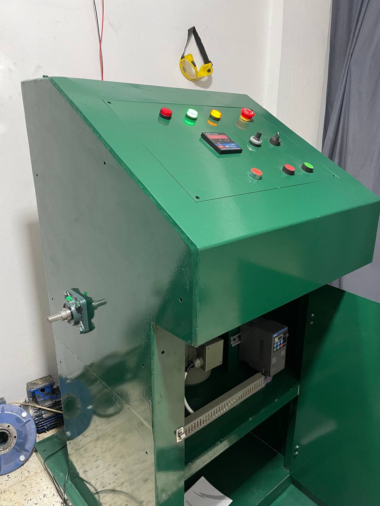
2↗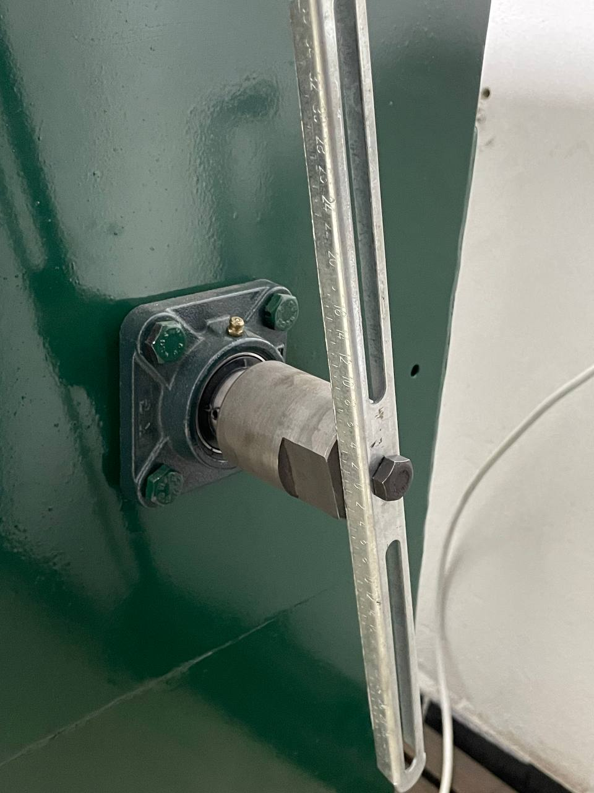
3↗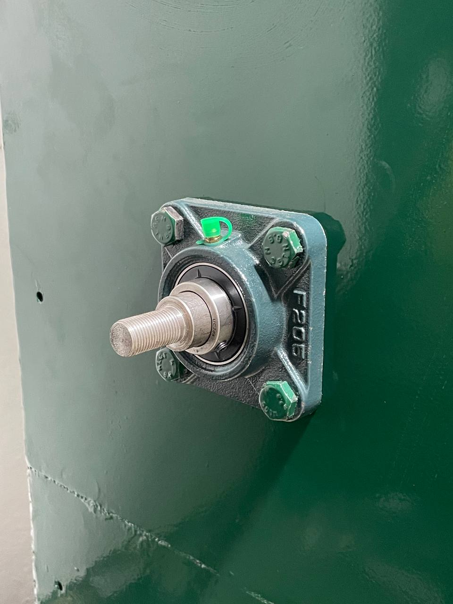
4↗| Fonction | V1 | V3 |
|---|---|---|
| Contrôle | 2 axes stepper (CNC) | VFD + console ergonomique |
| Moteur | Moteurs stepper doubles | 0,75 kW AC |
| Variateur | XY Stepper Driver | CHINT VFD |
| Vitesse | Programmable | 100 tr/min |
| Meilleur pour | Transformateurs de précision | Production haut volume |
Rapport d'avancement livré · offre machine à bobiner valable — contactez-nous pour la tarification.